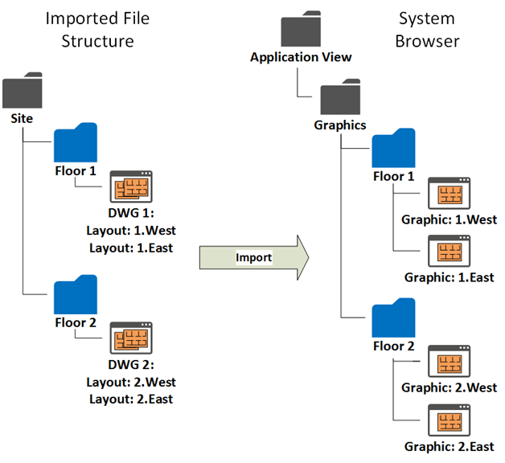
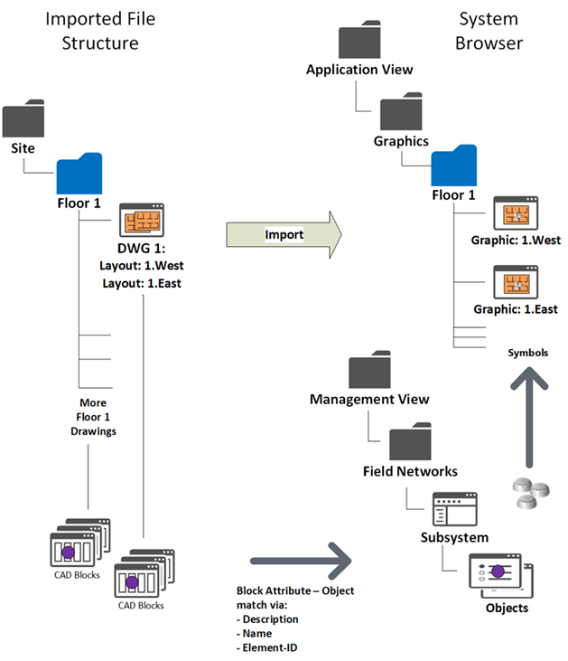

Advanced CAD Importer Functions
Import of the CAD Drawings and Folder Structure
The tool can import CAD drawings from a folder where files are organized in a subfolder structure as complex and deep as necessary.
The import procedure replicates the subfolder structure under the Desigo CC Graphics folder of the Application View, and creates new Desigo CC graphics that contain the drawings as background.
For each of the CAD drawings, you can select one or more layouts. The import procedure creates a Desigo CC graphic per selected layout.
You can also select which layers to import so as to simplify the resulting background image as necessary.

Import of the DMS Objects: CAD Blocks
The tool can identify and place the DMS symbols on the graphics based on the corresponding CAD blocks from the CAD drawings.
The CAD blocks must graphically represent the objects on the drawings and include a unique alphanumeric attribute that can match description, name, or SiB-X element ID in Desigo CC.
In the tool, you can configure import options to add and/or remove characters so as to adapt the attribute strings before comparing them to description or name.
NOTE: The SiB-X element ID has a fixed syntax (<n>/<m>). For example, 1/102 or 12/1435.

Graphic Output
- The tool creates one Desigo CC graphic per selected layout and include the symbols for the identified CAD objects. See an application example in Advanced CAD Import Example for FS20.
The following applies to the resulting graphics: - Each graphic contains a background layer with the CAD drawing.
- Depending on the import options you set, each graphic can contain one or more additional layers and depths where the symbols of the CAD objects are placed, for example fire detectors.
Symbols may be organized in separate layers based on the type/subtype of the corresponding DMS objects. For example, automatic detectors, manual callpoints, and so on. - The parent objects (for example fire zones), if not present in the CAD drawing, are also added automatically, optionally in separate layers.
An option allows you to consider the parent objects only. In such a case, only the parent layer is populated.
If the parent objects are present in the CAD drawing, they are imported in the same depth as the child CAD objects, and the grandparent objects (for example fire sections) are added separately in another depth.
See an application example in Layer and Depth Import Options Example. - Depths have a default display size determined to show all symbols. You can then adjust the display size as required.
The customized setting will not be overwritten by subsequent re-imports. - Symbols may or may not keep the size of CAD blocks, depending on the size option you set.
You can actually ignore the CAD block dimensions and set a symbol size that is determined as the average size of the applied Desigo CC symbols. - After importing:
- From System Manager, you can modify the graphic description as necessary.
The initial description (and name) is based on the CAD drawing information: <filename>_<layout name>. - From Graphic Editor, you can add new layers and configure new elements as necessary.
Instead, do not change the dimensions of the imported background drawing. - The permitted customizations will not be overwritten by subsequent re-imports as long as the import structure does not change (name of folders, files, and layouts).
NOTE: If you change the import structure, note that new graphics are created as soon as you import again.
At that point, if you want to get the previous (and possibly customized) graphics in the new structure, you can open the old graphics from Graphic editor, and then use the Save as command to overwrite the newly created graphics using new names and positions. From that moment on, any subsequent re-import will work on the new structure.